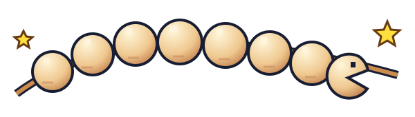
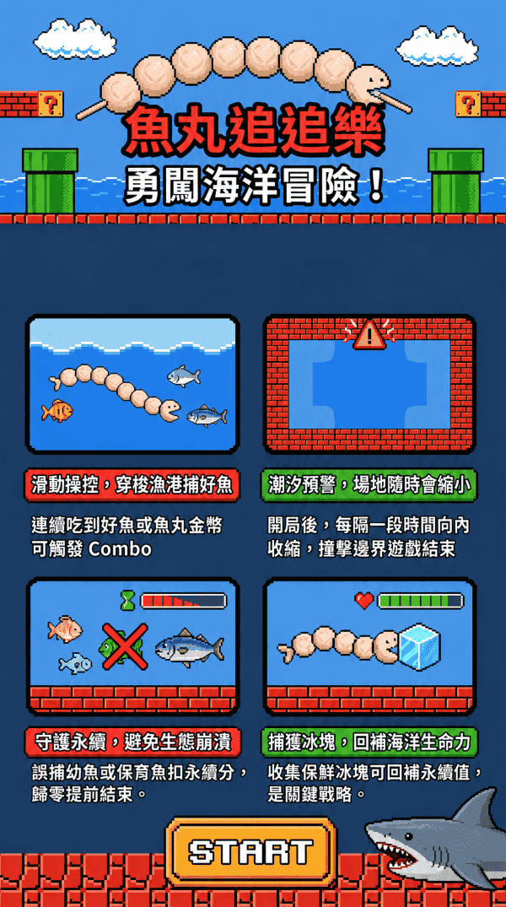
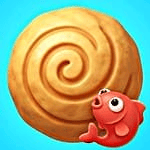

苑港海洋爭霸賽 · 挑戰最高紀錄
魚丸追追樂★
正在取得競賽資訊

⏱ 本場剩餘時間05:00
等待主持人開始
🏆 英雄排行榜 TOP 10
挑戰者募集中| 名次 | 挑戰者 | 遊戲狀態 | 最高分數 |
|---|

輸入名字，讓全場看見你的實力。
主持人按下開始，就能加入爭奪魚丸王！★ 吃好魚 · 衝高分 · 守護海洋 ★同分依玩家識別碼排序 · 截止後固定成績玩家入口 ↗

魚丸追追樂 現場競賽看板正在取得競賽資訊

| 名次 | 挑戰者 | 遊戲狀態 | 最高分數 |
|---|

輸入名字，讓全場看見你的實力。
主持人按下開始，就能加入爭奪魚丸王！